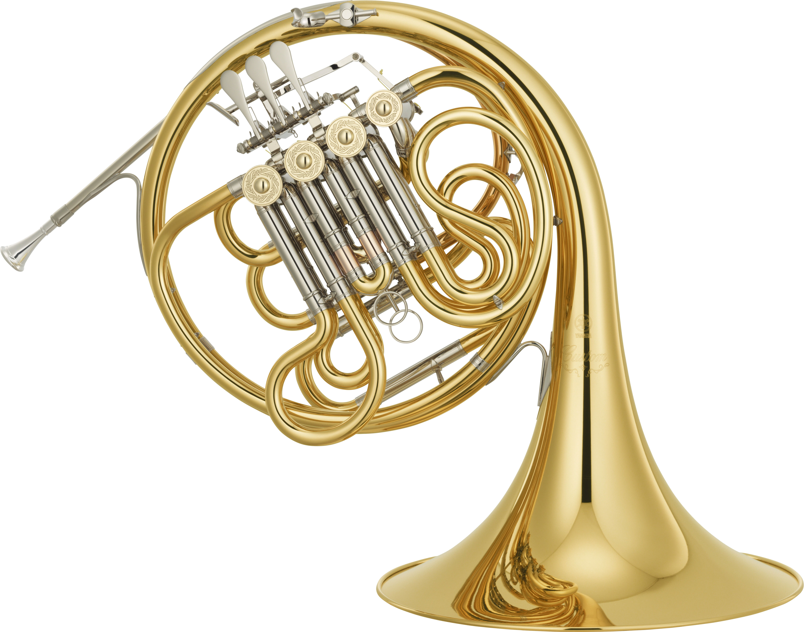

A trompa dupla tem dois sistemas de tubos, (o sistema do lado em Si♭, e outro sistema do lado em Fá) funcionando de forma com que o ar percorra as pompas do lado Si♭ com o acionamento da quarta válvula. O lado Si♭ é mais curto que o lado em Fá e é utilizado para atingir as notas agudas com mais facilidade e afinação.

